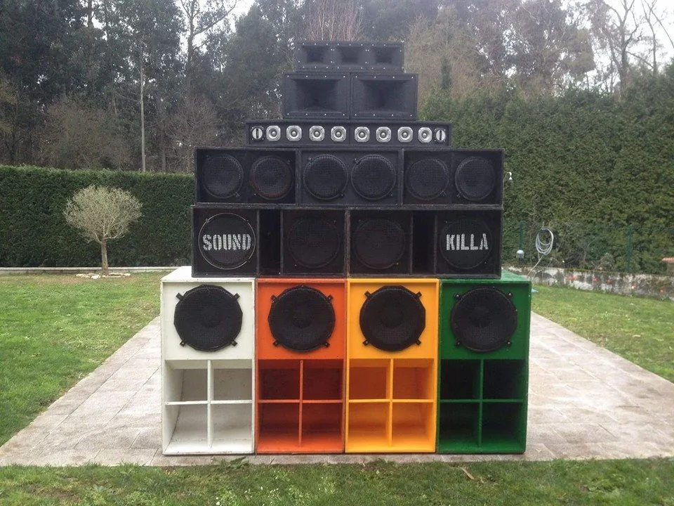

En los callejones de Kingston, Colón, San Juan y Barranquilla, el bajo eléctrico y los subwoofers de madera artesanal inventaron una física del sonido que no se escucha con los oídos: se siente en el pecho y en los huesos. Una indagación sobre el bajo antillano, la cultura del sound system y la vibración comunitaria en el Gran Caribe.
Hay en la tradición filosófica de Occidente un prejuicio secular que ha condicionado toda nuestra relación con las artes y el pensamiento: la jerarquía tiránica del ojo sobre los demás sentidos. Nos han enseñado a contemplar el mundo desde una distancia prudente, a valorar la forma visual delimitada, el contorno limpio, la perspectiva geométrica y la contemplación desapasionada de las cosas. La música misma, cuando fue domesticada por las academias europeas, se convirtió en una partitura de notas ordenadas que se leen en silencio sobre un atril o se escuchan en salas de concierto con alfombras espesas, donde al público se le prohíbe moverse, toser o dejar que el ritmo despierte la carne.
Pero quien haya caminado por los barrios populares de Kingston, de Colón en Panamá, de San Juan de Puerto Rico o de los puertos del Caribe colombiano sabrá que en esta cuenca geográfica la música no es un espectáculo para mirar de lejos ni un adorno acústico para amenizar la sobremesa: es una conmoción física total. En el Caribe, el sonido no pide permiso para entrar por el pabellón de la oreja: entra por la planta de los pies, trepa por las pantorrillas, sacude la caja torácica, hace vibrar el esternón y modifica el ritmo de la respiración. El responsable de esta mutación corpórea es una frecuencia acústica que la música de cámara siempre consideró peligrosa o vulgar: la baja frecuencia del bajo antillano.
Para comprender esta fuerza gravitatoria es necesario remontarse a la invención del sound system a finales de los años cincuenta en los suburbios de Jamaica y en las costas antillanas. Hombres de barrios pobres como Hedley Jones, Coxsone Dodd o Duke Reid, que no contaban con capital para contratar grandes orquestas de jazz ni acceso a las emisoras de radio controladas por las élites coloniales británicas, se convirtieron en ingenieros empíricos del sonido. Tomaron amplificadores de válvulas desechados por los cines, construyeron a mano cajones de resonancia gigantescos con tablones de contrachapado de pulgada y montaron torres de altavoces de quince y dieciocho pulgadas capaces de generar presiones sonoras jamás experimentadas por el cuerpo humano.
Aquellos pioneros descubrieron algo que la física acústica tardaría décadas en formalizar: que las frecuencias que oscilan entre los treinta y los cien hercios —las llamadas frecuencias subgraves— no se comportan como el sonido ordinario. Las ondas sonoras de baja frecuencia son tan largas que atraviesan los muros de concreto, doblan las esquinas de los edificios y viajan por el suelo de asfalto como si fueran una corriente telúrica. El bajo no se puede esquivar ni encerrar en una habitación; cuando el selector deja caer la aguja en el surco de vinilo y el amplificador libera la potencia del bajo, el aire mismo del barrio se vuelve denso, casi líquido, transformando la calle en una piscina de vibraciones compartidas.
En el centro de esta arquitectura sonora brilla el oficio del bajista caribeño, una figura que rompió radicalmente con las normas del bajo acompañante del rock anglosajón. Mientras que en el rock el bajo se limita a marcar el fondo rítmico y sostener los acordes que la guitarra solista despliega en el registro agudo, en el reggae, en el dub, en el ska y en la cumbia costeña el bajo se convierte en el solista indiscutido, en la voz principal que guía el baile. Es un bajo pausado, profundo, elástico, que sabe respirar; una línea melódica que no tiene prisa por llenar todos los compases y que utiliza el silencio —la síncopa vacía— con una maestría que obliga al cuerpo del danzante a esperar con anhelo el próximo impacto en la lona.

El teórico cultural Julian Henriques, en sus investigaciones fundamentales sobre el sound system jamaicano, ha acuñado el concepto de sonic bodies (cuerpos sonoros) para explicar cómo la experiencia de la baja frecuencia disuelve las fronteras del ego individual. Cuando doscientas o quinientas personas bailan apretadas frente a un muro de altavoces que vibra a noventa decibeles de subgrave, todos los corazones de la multitud quedan sincronizados por la misma onda de choque mecánica. No hay espacio para la división de clases ni para la vanidad solitaria: el cuerpo colectivo experimenta una comunión fisiológica directa que ninguna predicación religiosa ni ningún discurso partidista puede reproducir.
Hay también en esta devoción por la frecuencia grave una memoria histórica ineludible de la diáspora africana. El bajo eléctrico antillano es el heredero directo del tambor mayor, del tambor de tronco ahuecado que en las plantaciones esclavistas comunicaba a los cimarrones entre las selvas y que las autoridades coloniales prohibían sistemáticamente porque reconocían en su vibración profunda un peligro inminente de insurrección. Prohibir el tambor era intentar desarmar la memoria del cuerpo negro; electrificar el bajo y multiplicarlo a través de torres de subgraves fue la respuesta victoriosa con la que los descendientes de aquellos cautivos le arrebataron la soberanía acústica a las metrópolis coloniales.
Hoy en día, las modas del streaming digital intentan comprimir la música en archivos diminutos para ser escuchados a través de auriculares microscópicos de plástico que cancelan el ruido exterior y encierran al individuo en una burbuja de consumo solitario. Pero en las esquinas del Caribe, cuando cae el sol y el calor sofocante del asfalto empieza a templarse, el operador del sound system enciende los ventiladores de sus amplificadores, limpia el polvo de las cajas acústicas de madera y sube el potenciómetro de los subgraves. Y en ese temblor profundo que hace vibrar las ventanas de zinc y reúne a la vecindad en una sola respiración, late la certeza de que mientras el bajo antillano siga sacudiendo el aire, la fiesta comunitaria seguirá siendo el refugio invencible de la vida.
Fuentes.
- Gilroy, Paul (1993). The Black Atlantic: Modernity and Double Consciousness. Harvard University Press.
- Henriques, Julian (2011). Sonic Bodies: Reggae Sound Systems, Performance Techniques and Ways of Knowing. Continuum.
- Hebdige, Dick (1987). Cut 'n' Mix: Culture, Identity and Caribbean Music. Routledge.
Investigación sobre culturas sonoras, ingeniería acústica popular y música caribeña.
Fuentes consultadas el 19.11.2026. Análisis e interpretación: RUMMOR. Edición privada para revisión.